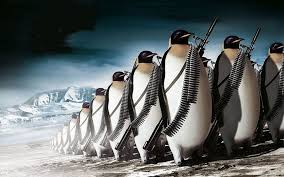
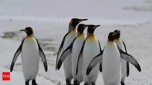

In a surprising turn of events, scientists have reported an unusual migration of penguins from the North Pole,
a phenomenon never before documented. This unexpected invasion has left researchers and wildlife enthusiasts
alike scratching their heads as these flightless birds, typically associated with the icy landscapes of Antarctica,
have been spotted in various northern coastal regions.
The first sightings were recorded last week along the shores of Newfoundland, Canada, where a small colony of Emperor
penguins was observed waddling along the beach, much to the astonishment of local residents. Eyewitnesses described
the scene as both surreal and delightful, with families flocking to the coast to catch a glimpse of the waddling newcomers.

Dr. Emily Carter, a marine biologist at the Arctic Research Institute, stated, “This is a remarkable occurrence that
challenges our understanding of penguin habitats and migration patterns. We are currently investigating the reasons
behind this unusual behavior, which may include climate change, food scarcity, or even changes in ocean currents.”
As the news spreads, wildlife organizations are urging the public to respect the penguins’ space and avoid disturbing
their natural behaviors. Conservationists are also mobilizing to monitor the situation closely, ensuring that these
birds receive the protection they need during their unexpected journey.
While the exact cause of this migration remains unclear, one thing is certain: the world is watching closely as these
charming birds continue their northern adventure, reminding us of the wonders and mysteries of nature.
